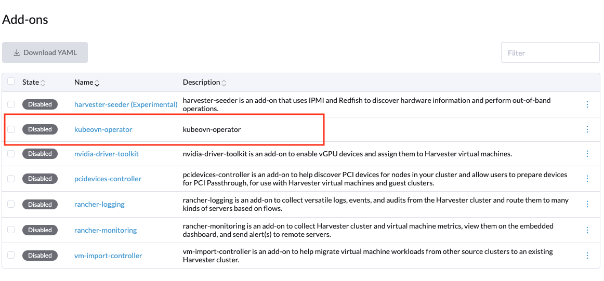

Kube-OVN Operator (Experimentell)
|
kubeovn-operator ist ein experimentelles Add-on. Für weitere Informationen zu experimentellen Funktionen, siehe Feature Labels. |
kubeovn-operator wird verwendet, um den Lebenszyklus von Kube-OVN als sekundäres CNI in zugrunde liegenden SUSE Virtualization Clustern zu verwalten.
Aktivieren von kubeovn-operator
Sie müssen kubeovn-operator aktivieren, um Kube-OVN in einem SUSE Virtualization-Cluster für erweiterte SDN-Funktionen wie virtuelle Private Cloud (VPC) und Subnetze für virtuelle Maschinen bereitzustellen.
-
Gehen Sie in der SUSE Virtualization Benutzeroberfläche zu Erweiterte → Add-ons.
-
Wählen Sie kubeovn-operator (Experimentell) aus und wählen Sie dann ⋮ → Aktivieren aus.

Das Add-on stellt kubeovn-operator bereit und erstellt das Standard-Configuration Objekt mit dem Namen configuration.kubeovn.io, das sinnvolle SUSE Virtualization-spezifische Voreinstellungen zur Konfiguration des Kube-OVN CNI verwendet.
Das folgende ist ein Beispiel für ein Configuration Objekt:
apiVersion: kubeovn.io/v1
kind: Configuration
metadata:
name: kubeovn
namespace: kube-system
spec:
cniConf:
cniBinDir: /opt/cni/bin
cniConfFile: /kube-ovn/01-kube-ovn.conflist
cniConfigDir: /etc/cni/net.d
cniConfigPriority: "90"
localBinDir: /usr/local/bin
components:
OVSDBConTimeout: 10
OVSDBInactivityTimeout: 10
checkGateway: true
enableANP: false
enableBindLocalIP: true
enableExternalVPC: true
enableIC: false
enableKeepVMIP: true
enableLB: true
enableLBSVC: false
enableLiveMigrationOptimize: true
enableNATGateway: true
enableNP: true
enableOVNIPSec: false
enableTProxy: false
hardwareOffload: false
logicalGateway: false
lsCtSkipOstLportIPS: true
lsDnatModDlDst: true
secureServing: false
setVLANTxOff: false
u2oInterconnection: false
debug:
mirrorInterface: mirror0
dpdkCPU: "0"
dpdkMEMORY: "0"
dpdkVersion: "19.11"
dualStack:
joinCIDR: fd00:100:64::/112
pingerExternalAddress: 2606:4700:4700::1111
pingerExternalDomain: google.com.
podCIDR: fd00:10:16::/112
podGateway: fd00:10:16::1
serviceCIDR: fd00:10:96::/112
global:
images:
kubeovn:
dpdkRepository: kube-ovn-dpdk
repository: kube-ovn
supportArm: true
thirdParty: true
vpcRepository: vpc-nat-gateway
registry:
address: docker.io/kubeovn
hugePages: "0"
hugepageSizeType: hugepages-2Mi
imagePullPolicy: IfNotPresent
ipv4:
joinCIDR: 100.64.0.0/16
pingerExternalAddress: 1.1.1.1
pingerExternalDomain: google.com.
podCIDR: 10.54.0.0/16
podGateway: 10.54.0.1
serviceCIDR: 10.55.0.1
ipv6:
joinCIDR: fd00:100:64::/112
pingerExternalAddress: 2606:4700:4700::1111
pingerExternalDomain: google.com.
podCIDR: fd00:10:16::/112
podGateway: fd00:10:16::1
serviceCIDR: fd00:10:96::/112
kubeOvnCNI:
requests:
cpu: "100m"
memory: "100Mi"
limits:
cpu: "1"
memory: "1Gi"
kubeOvnController:
requests:
cpu: "200m"
memory: "200Mi"
limits:
cpu: "1"
memory: "1Gi"
kubeOvnMonitor:
requests:
cpu: "200m"
memory: "200Mi"
limits:
cpu: "200m"
memory: "200Mi"
kubeOvnPinger:
requests:
cpu: "100m"
memory: "100Mi"
limits:
cpu: "200m"
memory: "400Mi"
kubeletConfig:
kubeletDir: /var/lib/kubelet
logConfig:
logDir: /var/log
masterNodesLabel: node-role.kubernetes.io/control-plane=true
networking:
defaultSubnet: ovn-default
defaultVPC: ovn-cluster
enableECMP: false
enableEIPSNAT: true
enableMetrics: true
enableSSL: false
netStack: ipv4
networkType: geneve
nodeSubnet: join
ovnLeaderProbeInterval: 5
ovnNorthdNThreads: 1
ovnNorthdProbeInterval: 5000
ovnRemoteOpenflowInterval: 10
ovnRemoteProbeInterval: 10000
podNicType: veth-pair
probeInterval: 180000
tunnelType: vxlan
nodeLocalDNSIPS: ""
vlan:
providerName: provider
vlanId: 1
vlanName: ovn-vlan
openVSwitchDir: /var/lib/rancher/origin/openvswitch
ovnCentral:
requests:
cpu: 300m
memory: 200Mi
limits:
cpu: 3
memory: 4Gi
ovnDir: /etc/origin/ovn
ovsOVN:
limits:
cpu: 2
memory: 1000Mi
requests:
cpu: 200m
memory: 200Mi
performance:
gcInterval: 360
inspectInterval: 20
ovsVSCtlConcurrency: 100|
Dieses Stellen Sie sicher, dass die Kube-OVN IPv4 Pod- und Service-CIDR-Blöcke sich nicht mit den Harvester Pod- und Service-CIDR-Blöcken überschneiden. |
Deaktivierung von kubeovn-operator
|
Stellen Sie sicher, dass keine virtuellen Maschinen VM-Netzwerke verwenden, die von Kube-OVN SDN-Komponenten unterstützt werden. Das Deaktivieren des kubeovn-operator Add-ons ist ein disruptiver Prozess. |
Sie können kubeovn-operator mit den folgenden Befehlen deaktivieren:
kubectl delete configuration kubeovn -n kube-system --wait=false
kubectl delete validatingwebhookconfiguration kube-ovn-webhook --ignore-not-found
kubectl delete ips --all
kubectl delete subnets join ovn-default --ignore-not-found
kubectl delete vpc ovn-cluster --ignore-not-found
# Remove annotations/labels in namespaces and nodes
kubectl annotate node --all ovn.kubernetes.io/cidr-
kubectl annotate node --all ovn.kubernetes.io/gateway-
kubectl annotate node --all ovn.kubernetes.io/ip_address-
kubectl annotate node --all ovn.kubernetes.io/logical_switch-
kubectl annotate node --all ovn.kubernetes.io/mac_address-
kubectl annotate node --all ovn.kubernetes.io/port_name-
kubectl annotate node --all ovn.kubernetes.io/allocated-
kubectl annotate node --all ovn.kubernetes.io/chassis-
kubectl label node --all kube-ovn/role-
kubectl annotate ns --all ovn.kubernetes.io/cidr-
kubectl annotate ns --all ovn.kubernetes.io/exclude_ips-
kubectl annotate ns --all ovn.kubernetes.io/gateway-
kubectl annotate ns --all ovn.kubernetes.io/logical_switch-
kubectl annotate ns --all ovn.kubernetes.io/private-
kubectl annotate ns --all ovn.kubernetes.io/allow-
kubectl annotate ns --all ovn.kubernetes.io/allocated-
# Remove annotations in all pods of all namespaces
for ns in $(kubectl get ns -o name | awk -F/ '{print $2}'); do
echo "annotating pods in namespace $ns"
kubectl annotate pod --all -n $ns ovn.kubernetes.io/cidr-
kubectl annotate pod --all -n $ns ovn.kubernetes.io/gateway-
kubectl annotate pod --all -n $ns ovn.kubernetes.io/ip_address-
kubectl annotate pod --all -n $ns ovn.kubernetes.io/logical_switch-
kubectl annotate pod --all -n $ns ovn.kubernetes.io/mac_address-
kubectl annotate pod --all -n $ns ovn.kubernetes.io/port_name-
kubectl annotate pod --all -n $ns ovn.kubernetes.io/allocated-
kubectl annotate pod --all -n $ns ovn.kubernetes.io/routed-
kubectl annotate pod --all -n $ns ovn.kubernetes.io/vlan_id-
kubectl annotate pod --all -n $ns ovn.kubernetes.io/network_type-
kubectl annotate pod --all -n $ns ovn.kubernetes.io/provider_network-
doneSie müssen jeden Knoten neu starten, um den Deinstallationsprozess abzuschließen. Sobald die Knoten neu gestartet sind, können Sie das kubeovn-operator Add-on über die Harvester-Benutzeroberfläche deaktivieren.